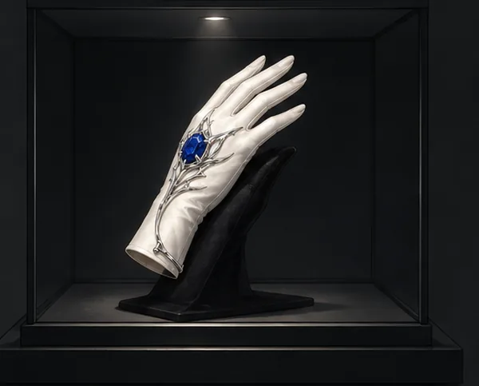

DESPERADO · MOVING WEBTOON
발소리는
계획에 없었다.
서비스 복도. 경비 교대까지 4분.
계획대로라면 이 길엔 우리밖에 없어야 했다.
SOUND ON · 천천히 SCROLL ↓
SERVICE CORRIDOR · 03:12
완타치잠깐.
또각…
또각…
찬호가 멈춘다.뒤따르던 셋도 말없이 벽으로 붙었다.
완타치두 명입니다. 천천히 오고 있어요.
…우리 쪽 동선은 아닙니다.
…우리 쪽 동선은 아닙니다.
철컥
완타치오른쪽 문, 잠겼습니다.
찬호알아. 그래서 기다리는 거야.
지나갈 때까지 아무도 영웅 되지 마.
지나갈 때까지 아무도 영웅 되지 마.
복도 끝.
별도 보관실.
발소리가 화면 밖으로 완전히 멀어진다.
찬호가 손가락 두 개를 들어 올렸다. 이동.

SILVER LILY · TARGET VERIFIED
딱지 · 이어피스와… 저게 진짜예요?
완타치
아이보리 장갑. 중앙 청색 스톤.
금속 릴리 세공까지 일치합니다.
금속 릴리 세공까지 일치합니다.
찬호
확인 끝났으면 손 움직여.
구경은 나가서 해.
구경은 나가서 해.
PILOT END
DESPERADO
목표 확인.
이제부터는 들어온 길로 나갈 수 없다.